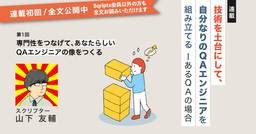

直近1週間の更新
8/2 (土)
データ汚染と汚染防御  千里霧中
千里霧中
セキュリティ脆弱性をついて不正な操作やアクセスを行うための異常コマンドなど、危険な入力データを汚染データと呼びます。例えばSQLインジェクションでの悪意あるSQLコマンドの入力が汚染データの一種です。そして汚染データの害を無効化する対策を汚染防御と呼びます。また汚染データがどのようにコードで広がっていくか、汚染データがシンク（汚染データが実害を発生させる脆弱性のポイント）に到達するか解析する活動を汚染解析と呼称します。例えばかなり極端な例ですが、以下のようなコードがあるとします。 import sqlite3 input = request.args.get('command') conn =…
8時間前

【Go】Goのテストに入門してみた！ ~一部のサブテスト実行編~  Zennの「Test」のフィード
Zennの「Test」のフィード
はじめに前回はテーブル駆動テスト（Table Driven Test）について見ていきました。今回は「一部のサブテストを実行する方法」に入門していきます。前回の記事はこちら！https://zenn.dev/tmyhrn/articles/8dcc4198903d7f この記事でわかること一部のサブテストを実行する方法正規表現を用いたテストケースのパターン 実装してみたmain.gopackage mainimport ( "testing" "unicode/utf8")func Length(s string) int {...
12時間前
8/1 (金)

Android Studioで低スペックエミュレータを作成してアプリの動作を検証する方法 Zennの「Test」のフィード
Android Studioで低スペックエミュレータを作成してアプリの動作を検証する方法 🤔 こんな悩みはありませんか？アプリ開発をしていて、こんな経験はありませんか？QA用の端末では動くのに、ユーザーから「重い」「落ちる」という報告が来る古い端末や低スペック端末での動作確認をしたいけど、実機がないメモリ不足やパフォーマンス不足での不具合を事前に発見したい実際に僕も、QA用の端末で問題なく動いていたアプリで、ユーザーからバグ報告があったのに同じ端末では再現しないという状況に遭遇しました。そこで、Android Studioのエミュレータで意図的に低スペック環境を作...
2日前

testcontainers for go + flyway で実現する統合テスト Zennの「Test」のフィード
対象読者Go を採用した開発環境に統合テストを導入したいflyway を採用した開発環境に統合テストを導入したいtestcontainers + flyway の組み合わせに興味がある 概要https://github.com/sugawani/testcontainers-go-with-flyway開発言語が Go でマイグレーションに flyway を使用している環境で統合テストを導入しようとした際に testcontainers for go が良さそうだったので実装してみました メリット開発者が dockerfile などの docker 周りを意...
2日前
7/31 (木)
QAエンジニアの存在価値に悩む in 2025  つとむ QAエンジニア
つとむ QAエンジニア
生成AIエージェントやMCPといった技術が普及し、以前と比較しても、アジャイルテスティングが開発チームの活動として当たり前になっていると感じています。かつて「品質」や「テストの専門家」といえばQAエンジニアの専門領域でしたが、現在では開発チーム自身が品質に責任を持ち、さらに生成AIの活用によってテスト自動化も急速に進んでいます。こうした変化の中で、QAエンジニアである私は「どこにQAエンジニアの価値を発揮できるのだろうか」という不安を感じてきました。イネイブリングQAの実践続きをみる
2日前

Playwright × 生成AI でVRTのバグ報告を自然言語化してみたら実用的だった話 43 Zennの「QA」のフィード
43 Zennの「QA」のフィード
こんにちは！IVRyのQAエンジニアの関(@IvryQa)です。IVRyでは2024年12月から Playwright[1] を用いた Visual Regression Testing（以下、VRT）[2] を導入し、約半年間運用してきました。ピクセル差分は拾えても これって本当にバグなのか？ と判断するのに時間がかかったり、マスク設定やしきい値調整など地味なメンテ工数が積み重なっていました。そこで今回、画像を理解できる生成AIを使って差分をバグ報告として自然言語化し、Slackに通知する仕組みを試してみました。同じような悩みを抱えている方の参考になれば嬉しいです！ 概要...
2日前
【メディア掲載】外国人人材のマッチングサービス「Stepjob」、定着率95%の理由 PTW／ポールトゥウィン【公式】
2050年には生産年齢人口が約3分の2まで減少するとされ、人材不足の深刻さが増しています。企業は人材不足への対応を迫られており、その解決手段として注目されているのが外国人採用です。2019年に「特定技能ビザ」という在留資格が創設され、それまでのようなホワイトカラーの「高度人材」だけでなく、一定の専門性や技能を持つ外国人材の受け入れが拡大されました。この制度の利用者は2025年には約30万人にまで拡大し、日本企業の大きな戦力となっています。オンラインの経済情報メディア『BUSINESS JOURNAL』では、このような日本企業の外国人採用を支援する代表的なサービスとして、ポールトゥウィンの「Stepjob」を紹介。Stepjob事業部部長の行平澄子は、多くの外国人が日本で働くことを希望する理由について、次のように語りました。続きをみる
2日前

Ranorex v12.3.0 日本語版 リリースのお知らせ
 Ranorex Blog - UIテスト自動化ツール Ranorex
Ranorex Blog - UIテスト自動化ツール Ranorex
このたび、 Ranorex v12.3.0 の 日本語版 がリリースされました。Ranorex v12.3.0 では、新機能の追加や機能改善がおこなわれ、新たに年間ライセンスの販売を開始しました。本リリースにあわせて、体 […]The post Ranorex v12.3.0 日本語版 リリースのお知らせ first appeared on UIテスト自動化ツール Ranorex.
3日前

生成AIでのテスト設計はこの「勘所3つ」を押さえれば大丈夫 3 Zennの「Test」のフィード
はじめにこんにちは！アルダグラムでQAのお手伝いをしているmiyashitaです！最近、QAのシステムテスト設計でもAI使いたいなぁ～と思い、色々と試行錯誤していました。その中で、こんな勘所を持っていたらAIでうまくテスト設計していけるのかも？と感じたところがありましたので、今回はそちらを紹介できればと思います。 使用するツールChatGPT：o4-mini-high 今回やりたいこと仕様書を解析して、テスト観点表を作成してもらう仕様書及びテスト観点表を基に、テストケースを作成してもらう 主な勘所AIをテスト設計で活用するための勘所は、以下の3つです...
3日前
生成AIでのテスト設計はこの「勘所3つ」を押さえれば大丈夫 3 Zennの「QA」のフィード
はじめにこんにちは！アルダグラムでQAのお手伝いをしているmiyashitaです！最近、QAのシステムテスト設計でもAI使いたいなぁ～と思い、色々と試行錯誤していました。その中で、こんな勘所を持っていたらAIでうまくテスト設計していけるのかも？と感じたところがありましたので、今回はそちらを紹介できればと思います。 使用するツールChatGPT：o4-mini-high 今回やりたいこと仕様書を解析して、テスト観点表を作成してもらう仕様書及びテスト観点表を基に、テストケースを作成してもらう 主な勘所AIをテスト設計で活用するための勘所は、以下の3つです...
3日前

【Go】Goのテストに入門してみた！ ~Table Driven Test編~ Zennの「Test」のフィード
はじめに前回は、Goにおけるテストの基本を学びました。今回は、Goでよく使われる 「テーブル駆動テスト（Table Driven Test）」 に入門します。前回の記事はこちら↓https://zenn.dev/tmyhrn/articles/7fc1bc9c9e634d この記事でわかることTable Driven Testの概要実装方法実装時に押さえておきたいポイント 実装してみた前回に引き続き、マルチバイトでの文字列カウントについてのテストケースを見ていきます。main.gopackage mainimport ( "testing...
3日前

Next.js 15 + Jest + MSW でネットワークレベルAPIモックテストを実現する
Zennの「Test」のフィード
Next.js 15 + Jest + MSW でネットワークレベルAPIモックテストを実現する 📖 概要このガイドでは、Next.js 15プロジェクトにMSW（Mock Service Worker）を導入し、JestでネットワークレベルのAPIモックテストを実現する方法を詳しく解説します。 🎯 目標ネットワークレベルモック: fetch APIが実際に呼ばれ、MSWがレスポンスを返す型安全なテスト環境: TypeScriptによる型保証保守性の高いテスト: テストケースの追加・変更が容易Next.js 15対応: App Routerやその他機能との...
3日前
7/30 (水)

[Playwright] ログイン状態でテストする簡単なやり方 Zennの「Test」のフィード
🌱 はじめにPlaywrightで認証のテストに苦手意識があり、避けていましたが、業務でやる必要が発生したため、試行錯誤しながら実装しました。その時に発見した簡単なやり方を紹介します。紹介する方法では実現できない場合や詳細な内容を知りたい方は、公式ドキュメントをご確認ください 🌱 結論!playwright.config.tsに指定のsession.jsonを設定する各テストごとに指定のsession.jsonを設定する 🌱 事前準備!下記のsession.jsonは、サンプルとしてiron-sessionを設定にしております。ご参考にする場合...
3日前

PrismaからPGliteに繋げてリポジトリ層のテストをお手軽にやってみた Zennの「Test」のフィード
こんにちは、エンジニアの籏野です。今回はPGliteとPrismaを用いて、実際にデータベースに接続して行うリポジトリ層のテストについて紹介します。作成したサンプルプロジェクトは以下のリポジトリに置いていますので、合わせてご確認ください。https://github.com/taku-hatano/pglite-prisma-test リポジトリ層におけるテストの課題クリーンアーキテクチャのようなデザインパターンを利用する場合、リポジトリ層を利用してビジネスロジックとデータアクセス層を分離することはよくあるかと思います。これにより、ビジネスロジック層においてはリポジトリ層を...
3日前

【第1回】専門性をつなげて、あなたらしいQAエンジニアの像をつくる  品質 | Sqripts
品質 | Sqripts
開発現場で働く中で、「自分の専門性とは何か？」と自問したことがあるのではないでしょうか。 特に「品質保証」という広大な領域を担うQAエンジニアにとって、その問いはキャリアの節目で繰り返し現れます。 品質保証における技術や...The post 【第1回】専門性をつなげて、あなたらしいQAエンジニアの像をつくる first appeared on Sqripts.
3日前
7/29 (火)

【Go】Goのテストに入門してみた！ ~基本編~ Zennの「Test」のフィード
はじめにこれまでGoでAPIを開発してきましたが、実はテストコードを書いた経験はありませんでした。（テストの様子をスクショに撮って証跡として残していました）業務でも積極的にテストコードを書いていこうという方針になりましたので、Goでのテストに入門してみようと思います。 この記事でわかることGoでの基本的なテストの書き方テストを書く上での押さえなければいけないポイントテスト関数がどのように実行・評価されるかの基本的な流れ テストコード書いてみたとりあえず、テストコードを書いてみました。今回はマルチバイトでの文字列カウントのテストにしてみました。main_...
5日前
7/28 (月)

Spock を使って Unit テストを書いてみる Zennの「Test」のフィード
はじめにJava のテストというと JUnit を使うことが多いかと思いますが、今回は Spock というテストフレームワークを使ってみて、とても便利だったので紹介します。Spock は Groovy ベースのテストフレームワークで、特にBehavior Driven Development(BDD)スタイルのテストを書くのに適しています。JUnit と比べて、より表現力豊かなテストを書くことができ、読みやすさも向上します。この記事では基本的な Spock の使い方、使う際の注意したいポイントをいくつか紹介します。以下は公式のドキュメントです。詳細な情報は公式ドキュメントを...
5日前

QAチームのDatadog導入奮闘記：品質可視化を実現するまでの全記録 Zennの「QA」のフィード
はじめに：QAエンジニアの新たな挑戦 📝こんにちは！QAエンジニアのAyakaです。今年の4月にQAチームが立ち上がったばかりで、まさにゼロからチームと仕組みを構築している最中です。私たちのチームが最初のミッションとして掲げたのが、サービス品質の可視化でした。開発チームがより能動的にパフォーマンス改善に取り組めるような環境を作りたい障害が起きてから受動的に動くのではなく、その予兆をデータに基づいて捉えたいそんな思いから、Datadogの導入プロジェクトがスタートしました。本記事では、私たちがインフラ監視からAPM、ログ収集、そしてダッシュボード完成に至るまで、数々の...
5日前

【JSTQB解説】第1章：テストの基礎 - ソフトウェアテストの基本概念と7つの原則 Zennの「Test」のフィード
【JSTQB Foundation Level V4.0 完全解説シリーズ】第1章：テストの基礎 この記事についてJSTQB Foundation Level資格を取得した経験と、実際のQA業務で学んだことを基に、シラバスの内容を実践的な視点で解説します。こんな方におすすめです。JSTQB Foundation Level資格の取得を検討しているテスト業務に配属されたばかりQAエンジニア・テストエンジニアに興味がある開発者だがテストについても学びたい記事の内容は以下の通りです。なぜテストが重要なのかテストの7つの基本原則テスト担当者の役割と必要なスキル...
5日前
【JSTQB解説】第1章：テストの基礎 - ソフトウェアテストの基本概念と7つの原則 Zennの「QA」のフィード
【JSTQB Foundation Level V4.0 完全解説シリーズ】第1章：テストの基礎 この記事についてJSTQB Foundation Level資格を取得した経験と、実際のQA業務で学んだことを基に、シラバスの内容を実践的な視点で解説します。こんな方におすすめです。JSTQB Foundation Level資格の取得を検討しているテスト業務に配属されたばかりQAエンジニア・テストエンジニアに興味がある開発者だがテストについても学びたい記事の内容は以下の通りです。なぜテストが重要なのかテストの7つの基本原則テスト担当者の役割と必要なスキル...
5日前
7/27 (日)

「知識ゼロから学ぶソフトウェアテスト 第3版 アジャイル・AI時代の必携教科書」を読んでみたメモ Zennの「Test」のフィード
はじめに環境が変わり開発に関わっていくことになったため、テスト知識０の状態で、「知識ゼロから学ぶソフトウェアテスト 第3版 アジャイル・AI時代の必携教科書」を読んでみました。読みながらのメモを書いた記事になります。 読書メモ 1章ソフトウェアで大事なのはどの機能でバグが出やすいか、その部分に対してどのようなテスト手法を適用すれば十分な品質が得られるか知ること全くバグのないソフトウェアは存在しない、完全なテスト手法が存在しないから完璧でなく十分な品質をもつソフトウェアを目指すテスト手法を学ぶ 2章 ホワイトボックステストホワイトボックステストプログ...
6日前

Claudeにテストを自動実行させる方法：効率的なテスト駆動開発の実践 Zennの「Test」のフィード
※この記事はAIによって生成されました。 はじめにAI アシスタントの Claude を使って、テストの作成から実行、結果の解析まで自動化することで、開発効率を大幅に向上させることができます。この記事では、Claude にテストを実行させる具体的な方法と実装パターンを紹介します。 基本的なテスト実行の依頼方法 1. 単純なテスト実行最もシンプルな方法は、Claude に直接テストの実行を依頼することです：「このプロジェクトのテストを全て実行して、結果を教えて」Claude は以下のような手順でテストを実行します：プロジェクトの構造を確認テストフレームワークを識別...
6日前